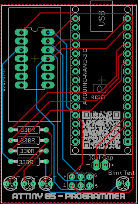
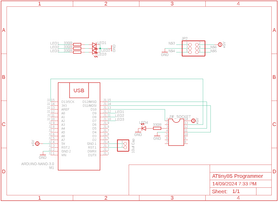

Make your own ATtiny 85 programmer using an Arduino Nano and a custom made PCB!
I've been building a few projects of late that use a ATtiny 85 microcontrollers and wanted to create a specifically designed programmer to make the job easier.
If you are an old hand with programming ATtiny 85's or a total novice and want to learn, then this bit of kit is essential.
Once you have the hardware, programming the ATtiny becomes quite simple.
I did do an 'Ible on how to Program a ATtiny with an Arduino which you can find here.
Note that I was only really just learing then myself and did the Ible so I wouldn't forget how to do it!
However, the programmer I did make was rudimental and I wanted something more permanent.
Along with the build of this project, I'll run through how to program the ATtiny 85 and get the blinking light sketch to work. Once you have conquered that - the sky's the limit!
This build was inspired by SF94's build on Instructables


Along with the hardware below, you will also need to get one of the custom PCB's printed. I've explained how to do this in the next step.
PARTS:



Firstly, you can find all of the files including the gerber files for this build in my GitHub Page
To get your board printed, You’ll need to send the Gerber files to a PCB manufacturer like JLCPCB (Not affiliated) who will print the boards for you.
Jump into my Google Drive link, download the Gerber file to your computer and then send them off to your PCB manufacturer of choice.
If you have no idea how to do this well, I've put together an Instructable on how to get your broads printed which you can find here.
If you are interested in having a look at the schematic or board files then I have included these as well and you can also find them in my Google Drive. I've also attached the schematic to this step.


This is pretty straight forward as there really aren't many components to add to the PCB!
STEPS:


Now it's time to add he ZIF socket IC holder. This is an easy way o hold he ATtiny into place whist you are programming it
STEPS:
That's it - you are now ready to sart programming your ATtiny


I've actually done an 'Ible now how to program the ATtiny using a Aduino Nano which you can find here
However, I've also gone through he process again in the vid that you can find in the intro
STEPS:
Once you have mastered this basic upload to the ATtiny, you can then move on to more fun things like these games that I made, or whatever projects that you can find on line.
You might even want to try your hand at coding! baby steps first.
I hope this Instrucable was of some help - if you have any questions, please don't hesitate to add a comment and let me know!
All the best
Lonesoulsurfer